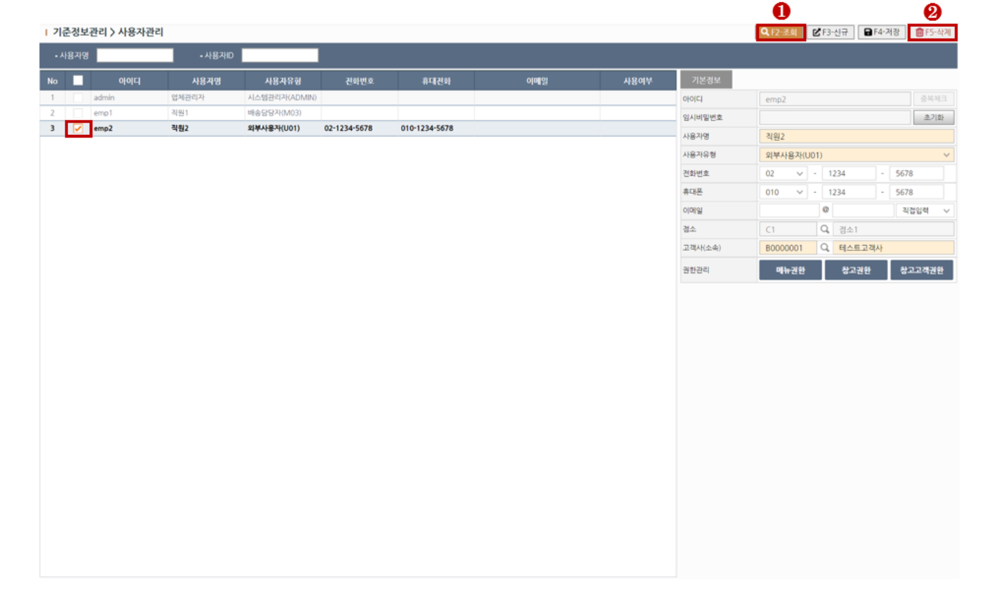

1. 사용자 생성하기
> STEP-1 새로운 사용자 추가를 원하실 경우 상단의 신규(F3)버튼을 클릭하여 행을 추가합니다.
> STEP-2 사용자 기본정보를 입력합니다. 노란색필드는 필수입력입니다.
> STEP-3 정보입력을 완료하셨다면 상단의 저장(F4)버튼을 클릭하여 저장합니다.
※ 필드설명1 - 아이디
[아이디]필드는 중복으로 저장하실 수 없으며 저장전 중복체크를 해주세요.
※ 필드설명2 - 임시비밀번호
사용자를 생성하면 최초에 임시 비밀번호를 부여하고 해당 사용자가 접속하여 비밀번호를 변경하도록 되어있습니다.
※ 필드설명3 - 사용자 유형
[사용자 유형] 필드의 값에 따라 필수 입력 필드가 달라집니다.
1) "창고&배송담당자" 또는 "배송담당자" 인경우 [점소]필드가 활성화 됩니다.
2) "외부사용자"는 화주 또는 배송고객을 의미하며 [고객사]필드가 활성화 됩니다.
2. 사용자 권한관리 (메뉴권한)
＊ 사용자별 [권한관리]필드는 신규로 등록할 경우 저장한 후에 활성화 됩니다.
> STEP-1 상단의 조회(F2)버튼을 클릭하여 조회합니다.
> STEP-2 권한을 부여할 사용자를 목록에서 선택합니다.
> STEP-3 메뉴권한 버튼을 클릭합니다.
> STEP-4 기 등록된 메뉴권한 목록이 나타나고 부여할 권한을 체크합니다.
> STEP-5 오른쪽 방향 버튼을 클릭하면 권한이 부여가 됩니다. 다중권한 부여도 가능합니다.
3. 사용자 권한관리 (창고권한)
＊ 사용자별 [권한관리]필드는 신규로 등록할 경우 저장한 후에 활성화 됩니다.
＊ 창고권한은 [사용자유형]필드가 "창고담당자" 또는 "외부사용자"인 경우 활성화 됩니다.
> STEP-1 상단의 조회(F2)버튼을 클릭하여 조회합니다.
> STEP-2 권한을 부여할 사용자를 목록에서 선택합니다.
> STEP-3 창고권한 버튼을 클릭합니다.
> STEP-4 기 등록된 창고 목록이 나타나고 부여할 창고룰 체크합니다.
> STEP-5 오른쪽 방향 버튼을 클릭하면 권한이 부여가 됩니다. 다중권한 부여도 가능합니다.
4. 사용자 권한관리 (창고고객권한)
＊ 사용자별 [권한관리]필드는 신규로 등록할 경우 저장한 후에 활성화 됩니다.
＊ 창고고객권한은 [사용자유형]필드가 "창고담당자" 또는 "외부사용자"인 경우 활성화 됩니다.
> STEP-1 상단의 조회(F2)버튼을 클릭하여 조회합니다.
> STEP-2 권한을 부여할 사용자를 목록에서 선택합니다.
> STEP-3 창고고객권한 버튼을 클릭합니다.
> STEP-4 기 등록된 고객사 목록이 나타나고 부여할 고객사를 체크합니다.
> STEP-5 오른쪽 방향 버튼을 클릭하면 권한이 부여가 됩니다. 다중권한 부여도 가능합니다.
5. 삭제하기
> STEP-1 상단의 조회(F2)버튼을 클릭하여 대상을 조회합니다.
> STEP-2 대상을 그리드에서 체크한뒤 상단의 삭제(F5)버튼을 클릭하여 대상을 삭제합니다.

6. 비밀번호 초기화하기
> STEP-1 상단의 조회(F2)버튼을 클릭하여 대상을 조회합니다.
> STEP-2 대상을 그리드에서 선택한뒤 초기화 버튼을 클릭하여 비밀번호를 초기화합니다.
※ 초기 비밀번호는 시스템 내부에서 관리하고 있으며 변경을 원하실 경우 연락주시길 바랍니다.